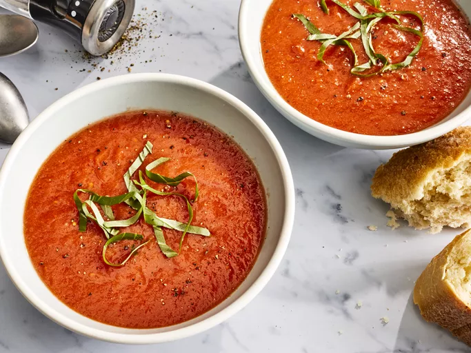

Delicious tomato soup

Description
This tomato soup recipe is simple, quick, and perfect to make when tomatoes are ripe in gardens and farmers' markets for a delicious summertime treat.
Ingredients
- 4 cups choppped fresh tomatos
- 2 cups chicken broth
- 4 cloves garlic
- 1 large slice of onion
- 2 tablespoons of butter
- 2 tablespoons of all-purpose flour
- 1 teaspoon of salt
Steps
- Combine tomatoes, chicken broth, garlic cloves, and a large slice of onion in a stockpot over medium heat. Bring to a boil, and gently simmer for about 20 minutes to blend flavors.
- Remove from heat and run the mixture through a food mill into a large bowl, or pan. Discard any stuff left over in the food mill.
- Melt butter over medium heat in the now empty stockpot. Stir in flour to make a roux by cooking, whisking constantly, until mixture turns medium brown.
- Gradually whisk in a bit of the tomato mixture to prevent lumps from forming, then stir in the rest.
- Season with salt and spices to taste.
- Serve hot and enjoy!